Powder Change
This project evaluates a new coating powder to improve surface finish, reduce pump wear, and enhance overall coating performance.
Hi, I'm Mayengo Violah
I have a background in chemical engineering and hands-on experience in laboratory testing and production. In Scania’s paint shop, I support the introduction of powder primers and work on improvements to the pretreatment process. My role brings together laboratory testing and the practical requirements of production.
View My WorkWho I Am
My background combines chemical engineering with experience in laboratory work and production. Before Scania, I worked in the pharmaceutical and juice industries. Today, my focus is primer and pretreatment in the paint shop.
My work involves preparing technical changes for production, coordinating tests and following up results with colleagues and suppliers. I enjoy understanding a problem, investigating it practically and helping the team find a workable solution.
A combination of technical education, software development training, and hands-on industry experience.
SGS Linköping, Sweden
Uppsala University, Sweden
Kyambogo University, Uganda
Scania Oskarshamn, Sweden
Ahlstrom Aspa Bruk - Örebro, Sweden
Sizes AB Oskarshamn, Sweden
Viral Industries Ltd Kampala-Uganda
Kwality Afro Asis ltd, Pharmaceutical Company Uganda
Projects demonstrating my frontend and backend development experience, responsive interfaces, modern web technologies, and intuitive user experiences.
This project evaluates a new coating powder to improve surface finish, reduce pump wear, and enhance overall coating performance.
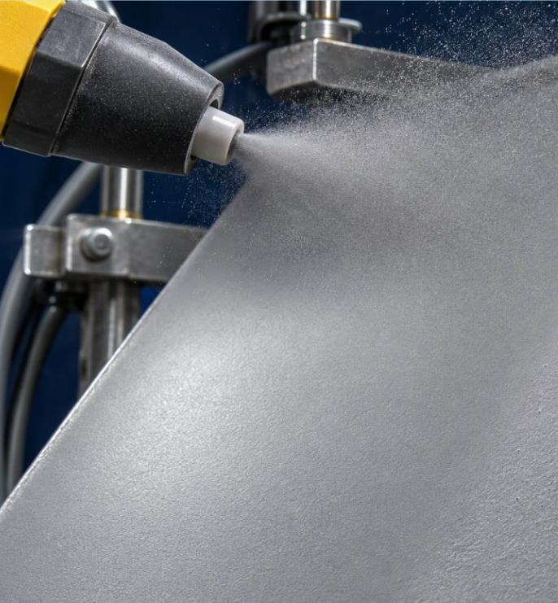
This project evaluates a lower-cost coating powder from a new supplier to address quality issues with the current powder.
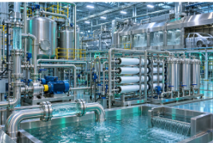
This project evaluates Oxsilan as an alternative to zinc phosphate pretreatment to reduce chemical, water and energy use.
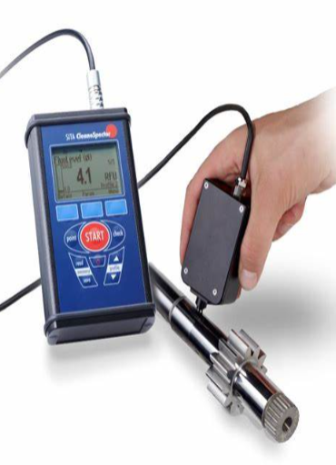
This lab equipment measures oil on substrate surfaces, surface tension and oil content in bath solutions.
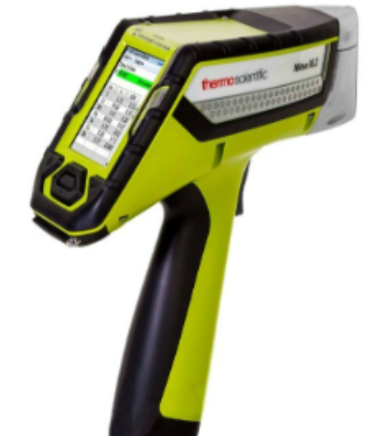
Responsible for the equipment, careful handling of its steel components and user training.
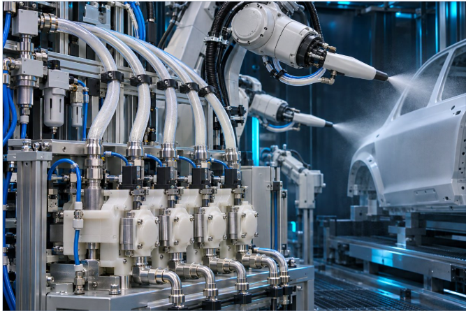
This project aims to reduce costs by lowering the primer thickness inside the cab of vehicles.
Outside work - Small moments captured in images.
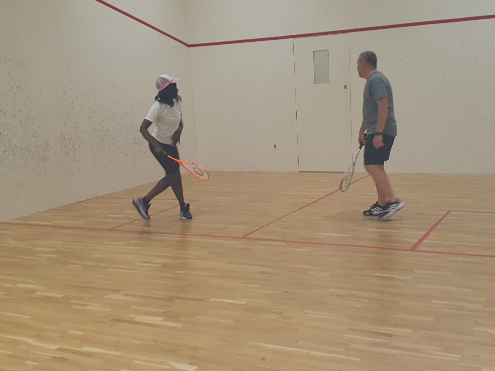
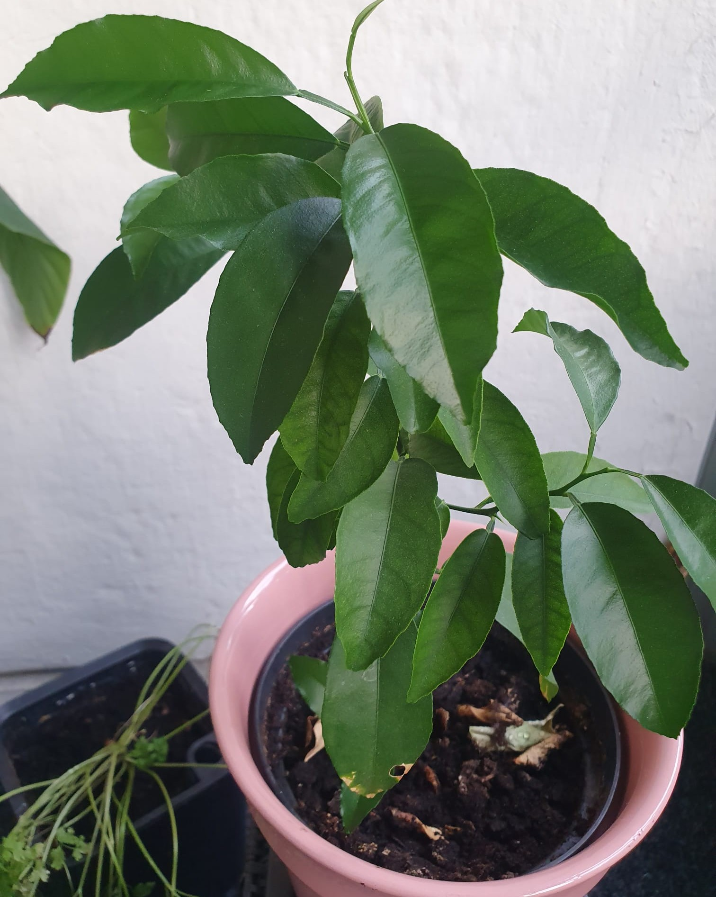
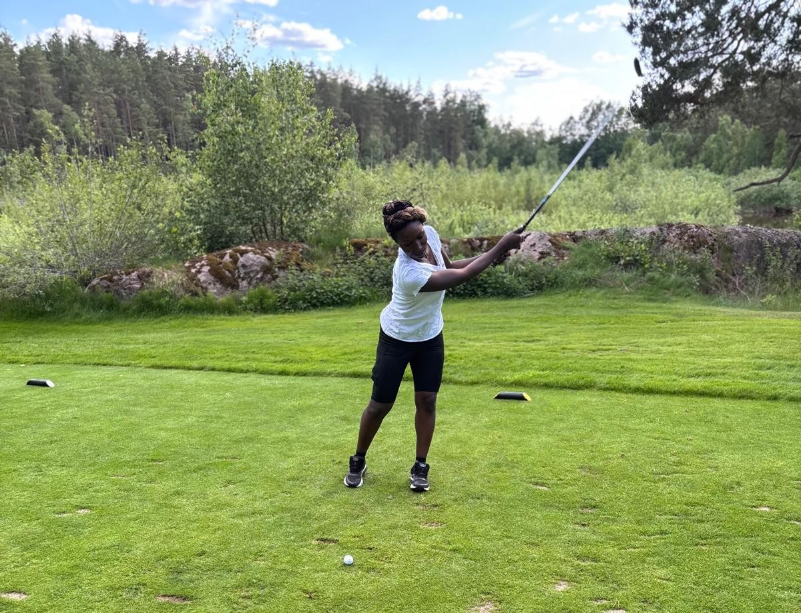
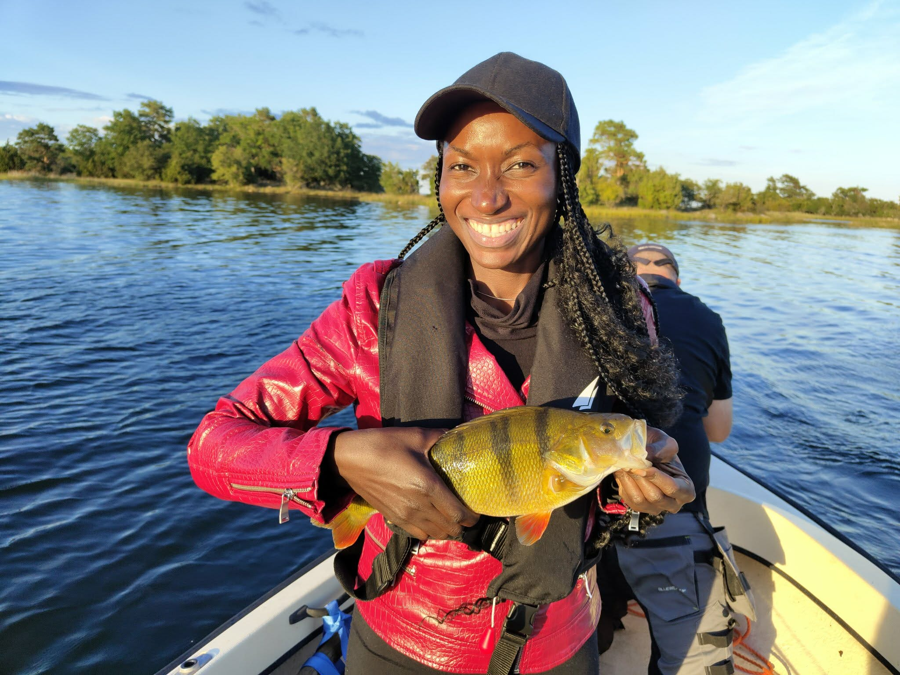
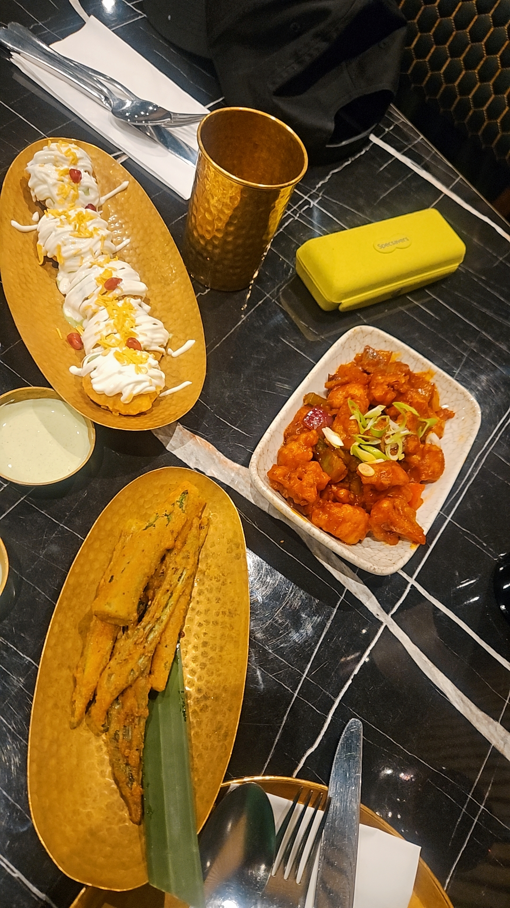
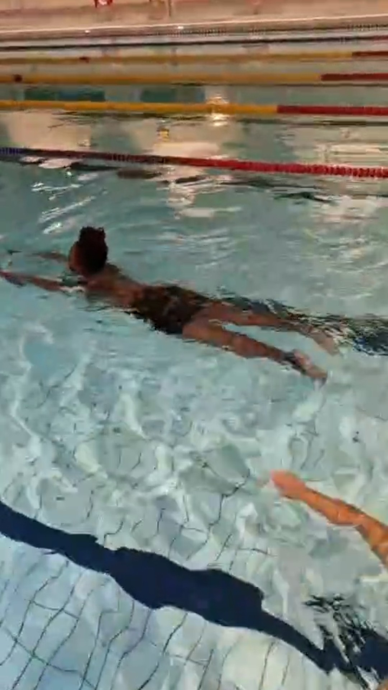
My main internal customers are the paint-shop production teams and the project teams introducing product or process changes. I also work with R&D, Purchasing, supplier quality, SHE and laboratory colleagues. Suppliers and research partners provide technical input and depend on clear requirements and feedback from us.
I receive assignments through formal project work, actions from technical meetings and direct requests by email. The work ranges from trial planning and defect investigations to chemical documentation and equipment preparation.
I’d like to discuss keeping one shared assignment list with my manager. It would include the following fields.
Assignment · Requester · Expected result · Priority · Deadline · Next action · Blocker
A short weekly review would help us:
| Assignment | My contribution and current focus |
|---|---|
| Powder change, PCR331763 | Coordinate local trial preparation and evaluate coating defects with AkzoNobel. The presentation identifies January 2027 as the next trial period. |
| New powder supplier, PCR501707 / IGP | Provide process engineering support for trials, plant readiness and implementation. Current follow-up includes product-document consistency and supplier approval. |
| Thin-film pretreatment / Oxsilan | Support laboratory installation, operator preparation and cleanability testing. Corrosion performance remains an important validation topic. |
| Laboratory development and digitalisation | Support new analysis equipment and better use of measurement data. The equipment includes SITA instruments and XRF. |
| Chemical registration in Maximo | Coordinate registration of pretreatment chemicals to improve purchasing traceability and support ordering through Maximo. |
| COReSurf and DiReST | Contribute to collaboration on pretreatment optimisation and digital process monitoring. Martin Jönsson is identified as Scania’s COReSurf lead. |
| Reduced primer thickness inside the cab | Follow up the cost-reduction opportunity. The presentation records the activity as paused until the new powder is introduced. |
| Water treatment and other chemical assignments |
Contribute to water-treatment mapping and improvement studies. Additional assignments include adhesives, lubricants and chemical-group activities. |
I performed the powder-sintering verification trial on robot bells on and shared the test report. The trial outcome was positive. The overall powder-change project is ongoing.